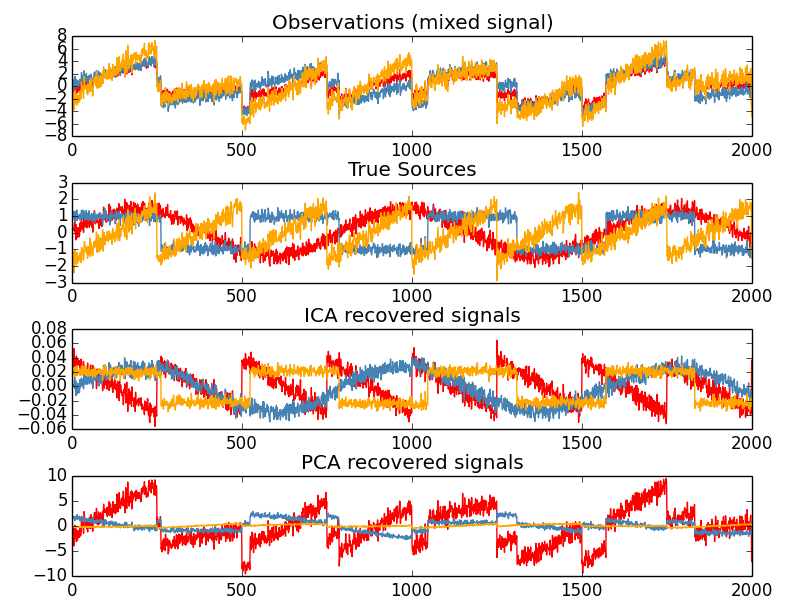

Blind source separation using FastICA¶
An example of estimating sources from noisy data.
Independent component analysis (ICA) is used to estimate sources given noisy measurements. Imagine 3 instruments playing simultaneously and 3 microphones recording the mixed signals. ICA is used to recover the sources ie. what is played by each instrument. Importantly, PCA fails at recovering our instruments since the related signals reflect non-Gaussian processes.
Python source code: plot_ica_blind_source_separation.py
print(__doc__)
import numpy as np
import pylab as pl
from scipy import signal
from sklearn.decomposition import FastICA, PCA
###############################################################################
# Generate sample data
np.random.seed(0)
n_samples = 2000
time = np.linspace(0, 8, n_samples)
s1 = np.sin(2 * time) # Signal 1 : sinusoidal signal
s2 = np.sign(np.sin(3 * time)) # Signal 2 : square signal
s3 = signal.sawtooth(2 * np.pi * time) # Signal 3: saw tooth signal
S = np.c_[s1, s2, s3]
S += 0.2 * np.random.normal(size=S.shape) # Add noise
S /= S.std(axis=0) # Standardize data
# Mix data
A = np.array([[1, 1, 1], [0.5, 2, 1.0], [1.5, 1.0, 2.0]]) # Mixing matrix
X = np.dot(S, A.T) # Generate observations
# Compute ICA
ica = FastICA(n_components=3)
S_ = ica.fit_transform(X) # Reconstruct signals
A_ = ica.mixing_ # Get estimated mixing matrix
# We can `prove` that the ICA model applies by reverting the unmixing.
assert np.allclose(X, np.dot(S_, A_.T) + ica.mean_)
# For comparison, compute PCA
pca = PCA(n_components=3)
H = pca.fit_transform(X) # Reconstruct signals based on orthogonal components
###############################################################################
# Plot results
pl.figure()
models = [X, S, S_, H]
names = ['Observations (mixed signal)',
'True Sources',
'ICA recovered signals',
'PCA recovered signals']
colors = ['red', 'steelblue', 'orange']
for ii, (model, name) in enumerate(zip(models, names), 1):
pl.subplot(4, 1, ii)
pl.title(name)
for sig, color in zip(model.T, colors):
pl.plot(sig, color=color)
pl.subplots_adjust(0.09, 0.04, 0.94, 0.94, 0.26, 0.46)
pl.show()
Total running time of the example: 0.25 seconds ( 0 minutes 0.25 seconds)